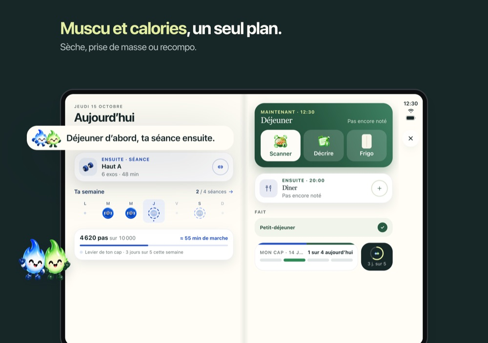
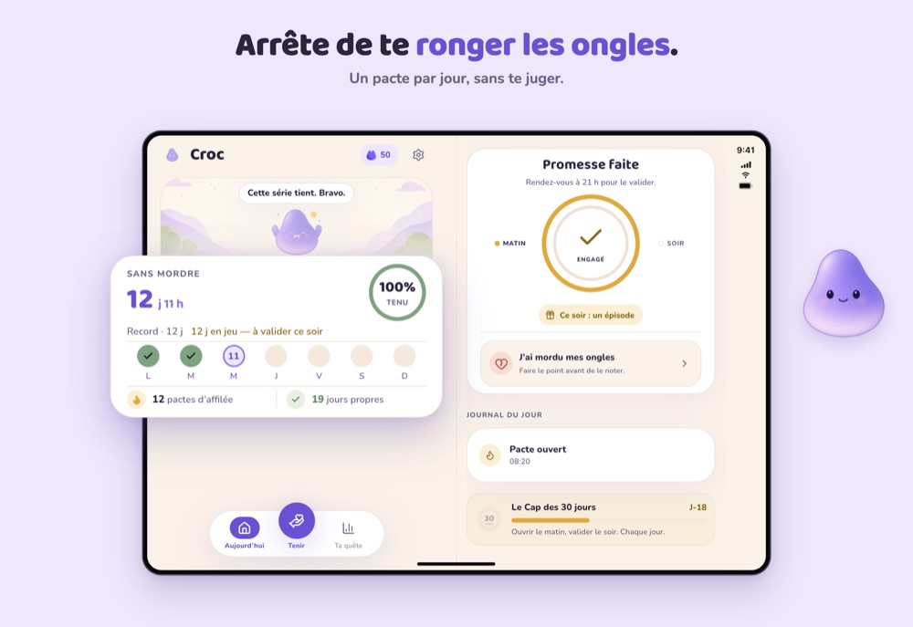
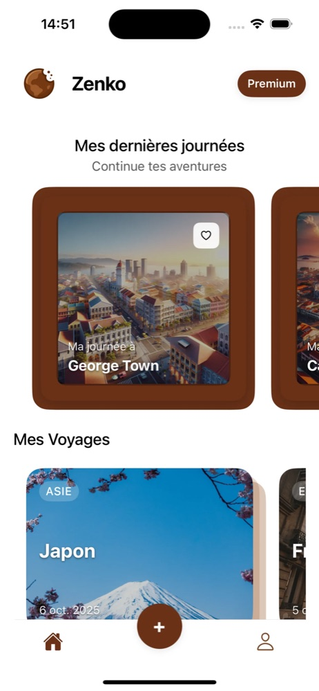
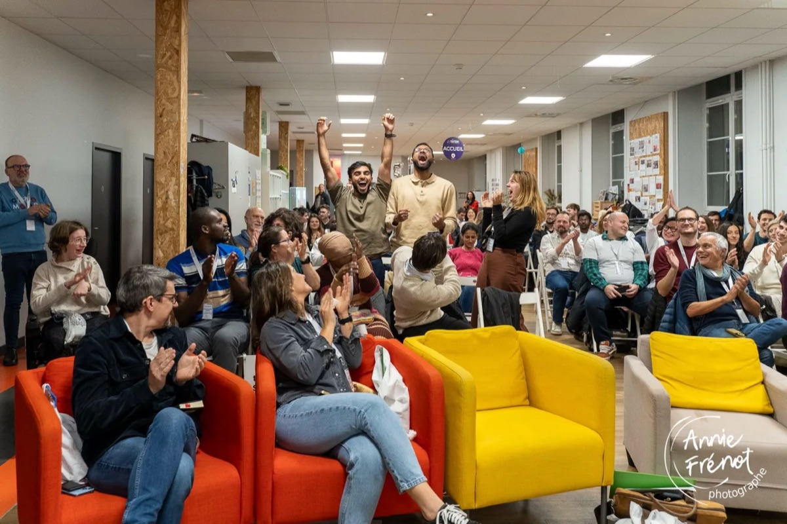

Kenz
Je transforme une idée en app que les gens utilisent. Et l’IA y fait le vrai travail.

Chaque app part d’un petit problème du quotidien.
Commençons par celui-ci.Tu enregistres des recettes sur TikTok. Tu ne les refais jamais.
pâtes crémeuses au citron
Partager vers
 Oshii
Oshii
Pâtes crémeuses au citron
- Pâtes200 g
- Parmesan40 g
- Citron1
- Crème10 cl
4 étapes


Oshii
Partage la vidéo à Oshii : elle devient une recette pesée, prête à cuisiner.
Le japonais, ça a l’air impossible.
ねこ が すき
J’aime les chats.


Compter ses calories ? Personne n’a le temps.
- Protéines38 g
- Glucides62 g
- Lipides14 g
- ≈ 520 kcal


Tu te ronges les ongles depuis toujours ?
- L
- M
- M
- J
- V
- S
- D
Cette série tient. Bravo.
exemple

Ce soir, on joue à quoi ?

Miru
Tu choisis un thème, Miru crée le jeu en direct. Un téléphone qui tourne, ou chacun le sien.
Une journée à remplir, un budget à tenir.
- Matin
- Après-midi
- Soir


Vous passez trop de temps à chercher et trier l’info ?
La note attend votre validation.
Note du lundi
Note envoyée.
J’installe une équipe d’agents IA chez vous. Chacun son rôle, une mémoire commune, et rien ne part sans votre validation.
Ou plutôt…
Des vidéos courtes, des carrousels et des visuels de store réguliers, à votre charte.
Comment on avance
On en parle.
Je vous montre un premier prototype.
Vous validez, je lance.

54 heures, une équipe, la première place.
Startup Weekend, photo d’Annie Frénot